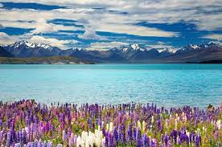
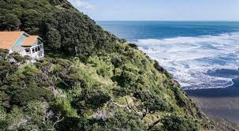

<!DOCTYPE html>
<html lang="en">
<head>
    <meta charset="UTF-8">
    <meta name="viewport" content="width=device-width, initial-scale=1.0">
    <title>Document</title>
    <link rel="stylesheet" href="style.css"/>
</head>
<body>
    
</body>
</html>
<h1.5> Hi my name is Atamai and im 14 years old</h1.5>
<h1.5> I go to western springs college and this is my website</hi.5>
<p> This Website is about some of my favorite parks and Regional parks he in New Zealand</p>


<!DOCTYPE html> 
<html> 
<head>
   <link rel="stylesheet" href="style.css">
</head>
<body>
  <h1>Cool regiona parks</h1> 
  <h3> Wendorholm Regional Park </h3>
  <p>
    Wendorholm Regional park is a nice park for having nice picknicks and staying in a 
    tent with your family on a nice sunny day. It also has a very good beach with lukewarm water
    and lifeguards to ensure your saftey, and on the other side of the beach there a big lagoon 
    where there are many fish to go and catch. There is also a house called the couldrey house set inside
    a beautiful garden, inside the house is some intresting victorian stuff. Also at the regional park 
    there is a nice looking batch, it has electricity and all of that stuff. 
  </p>  


  <h3>Lake Tekapo.
    Lake Tekapo is a big lake located in the south island around the Mount dobson area.
    The lake is a nice place to take a visit to. They have lots of camps to stay in and nice landmarks 
    One of the things that they have there is the beautiful scenery. The lake has a beautiful turqouise blue
    and the rocky ish terrain with the nise purple flowers.
    Starry Skies: Lake Tekapo is renowned for its exceptionally clear skies, making it a prime spot for stargazing. In fact, the area around the lake is designated as a UNESCO 
    Dark Sky Reserve, ensuring minimal light pollution and optimal conditions for observing the night sky.
    Hot Springs: Nearby Tekapo Springs offers a relaxing thermal
     hot pool experience, perfect for unwinding after a day of adventure.
     Visitors can soak in the warm, mineral-rich waters while enjoying panoramic views 
     of Lake Tekapo and the Southern Alps.
  </p> 

 
  <p>
   <h1.5>Anawhata Beach and bach</h1.5> 
   <h1.5>Anawhata beach is a beach located around the north of piha, they are on the same coastline
    but separated by many ridges, hills and bush. The bach there is called the Kedlle house. The House was
    built in the 1930's. The house is located up a hill and a trail at the backyard of the house leads
    to the beach. The house brings great views and is solar powered. 

   </h1.5> 
  </p> 
  
  <a href="PageTwo.html"> More Here </a>


  <a href='http://www.freevisitorcounters.com'>Get Visitor Counters</a> <script type='text/javascript' src='https://www.freevisitorcounters.com/auth.php?id=5ed6d46529b435d044d4005b90bdb347a40675a1'></script>
  <script type="text/javascript" src="https://www.freevisitorcounters.com/en/home/counter/1163212/t/0"></script>
</body>